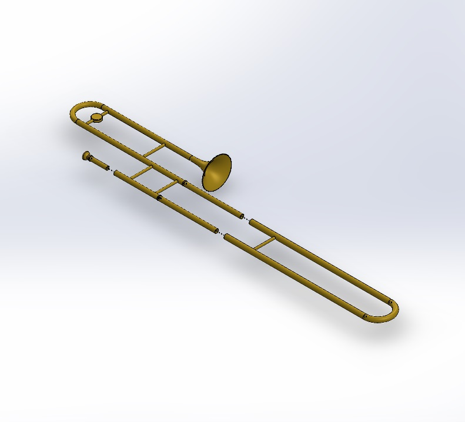

Self-Stabilizing Platform Payload
A device which provides a platform that keeps its initial orientation given rotations to it's base. This was designed by myself and 2 other engineers to accommodate the necessary electronics such as a battery, voltage converter, microcontroller, photorelay, 2 MPU sensors, and a microSD card reader/writer, while also providing functionality to our 3 servos by creating our own arms. We also accounted for any problems involving tangling wires by creating slots in each arm to feed all wires through. This was designed and manufactured for STAR's Bear Force One rocket.

5.5" Avionics Bay w/ Bulkheads
This design was designed to accommodate the electronics for our 5.5" diameter stage separation rocket. It accommodates various electronic components such as 2 9V batteries, 2 LiPo batteries, 2 altimiters, an antenna, and our club's newly designed modular flight controller (the blue stack). The design is constrained in the rockets by upper and lower bulkheads (in red). Our avionics bay is inserted in the rocket axially, but the sled feature (the separation of the bay into two separate housings) allows us much greater accessibility to our electronics

4.0" Avionics Bay
This design was created to accommodate the same electronics as the previous avionics bay, but for a 4.0" diameter rocket, which forced us to use a slightly larger height. The lid here now acts as a supporting structure to constrain the batteries during launch. The arrangement of the components now allows us to keep the accessibility by simply removing the lid, without having to use a sled design like we did in the previous avionics bay.

Stage Separation Mechanism
I worked with our lead engineer to design and provide testing calculations for a mechanism to provide stage separation for our next rocket. The design involves two centering rings, each attached to a separate stage. The two centering rings are attached by screws and nuts, with a spring in between. The screws themselves are drilled out, filled with black powder and wired to igniters, and are finally sealed. Once stage separation is required, our flight computer ignites the blackpowder, shearing the screws. Now nothing is holding the two stages together and the springs act to push the two stages apart and the lower stages falls to eventually deploy it's parachute while the upper stage soon ignites it's own motor to keep flying higher.

Autotracking Lecture Recorder
I worked in a 5 person group to fully design a feasible, functional product. For courses taught in large lecture halls, many schools need to hire someone to track the lecturer with the camera when recording a class. We chose to create a device that would allow a webcast to be created and recorded without needing an operator for the camera. This involves having the speaker carry a small module (not shown) that includes his microphone and a positioning sensor. Our electronics within the base recorder then detect the position of the speaker and a servo motor turns accordingly to keep the camera along with the professor. My portion of the work mainly consisted of the mechanical design of our product and providing analysis for possibilities of mechanical failure. Our group accounted for many scenarios involving different classrooms and different camera sizes as well as cases where we would want our camera to stay pointed at a spot on the board, this ensured our design was as modular as possible.

Wind Turbine Base Structure
This final design was a result of many iterations and variations created by members of my 5 person group to build a support structure for a miniature wind turbine that would provide the best load to displacement ratio possible given certain sizing constraints. Our design process involved extensive research for our choices and several types of FEA analysis as well as optimization for certain variables in our design.

Mini Rover Payload
My first CAD ever! I was assigned to build a chassis that would accommodate the components needed to reliably allow the rover to function (microcontroller, distance sensor, motors, wheels, ball caster).
My Best Design
(It's me)

Vise Assembly
One of my earlier designs, used to hold down small items you're looking to drill, sand, file, etc.

Cordless Phone Cover
Beep Beep. Boop Boop.

Tenor Trombone (Premium)
For you musicians out there (no spit valve though, sorry).

Generic Toothpaste Tube
Dental Hygiene is very important!


{kind=link}
{kind=link}